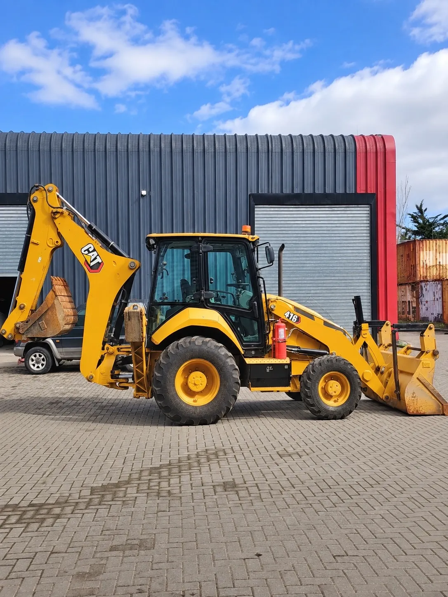

1 / 6
Retroexcavadora
Caterpillar 416
- 2024
- 1.833 h
Precio$70.000.000+ IVA
Ficha técnica
- Año
- 2024
- Horas de uso
- 1.833
- Motor
- Cat C3.6 turbo diésel
- Potencia
- 75 HP
- Tracción
- 4x4
- Cabina
- Cerrada, con aire acondicionado
- Garantía
- De fábrica, vigente
- Mantenciones
- Realizadas por Finning
- Revisión técnica
- Vigente hasta enero de 2028
Descripción
Retroexcavadora Caterpillar 416 del año 2024 con 1.833 horas. Motor Cat C3.6 turbo diésel de 75 HP, tracción 4x4 y cabina cerrada con aire acondicionado. Tiene la garantía de fábrica vigente, todas sus mantenciones hechas en Finning y la revisión técnica al día hasta enero de 2028.